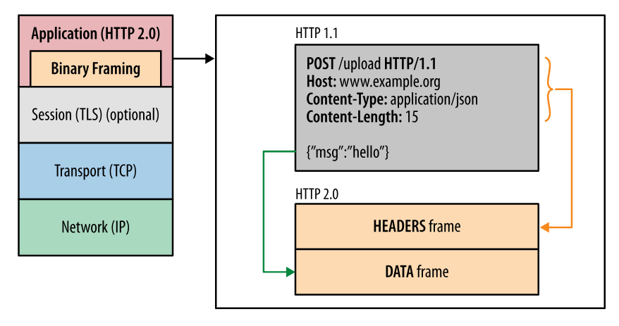
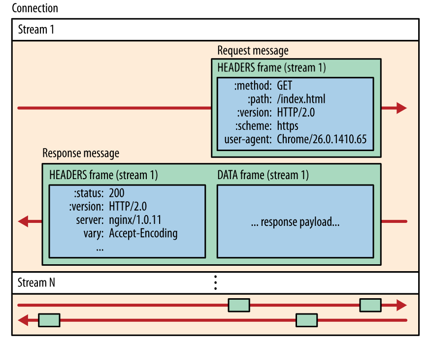
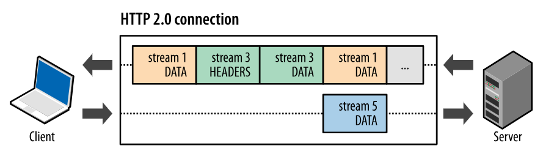
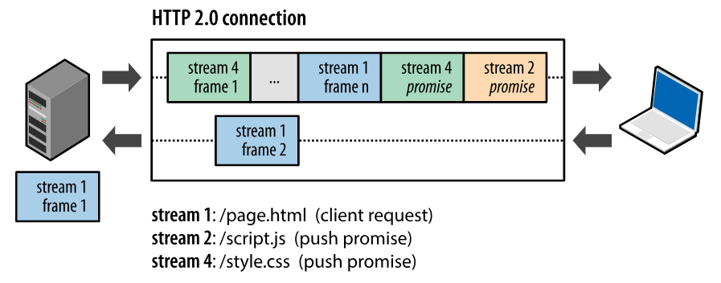

#META_LECTURE#: #TITLE#
•
•
•
•
Modified: #LAST_MODIFIED#
Humla v#HUMLA_VERSION#
Introduction
Overview
Developed from SPDY (2009) experimental protocol by Google
May 2015: RFC 7540 (HTTP/2) and RFC 7541 (HPACK)
HTTP/2 standards extend (not replace) the previous HTTP standards
HTTP/1.x limitations
HTTP/1.x clients need to use multiple connections to achieve concurrency
unnecessary network traffic – request and response headers not compressed
no effective resource prioritization
Primary goals
Reduction of latency
enabling full request and response multiplexing
minimize protocol overhead via efficient compression of HTTP header fields
support for request prioritization and server push
HTTP/2 does not modify application semantics of HTTP
HTTP metods, URIs, header fields are the same
HTTP/2 modifies
how data is formatted and transported
in client/server communication
Binary Framing Layer
Binary framing layer
defines how HTTP messages are encapsulated and transferred
communication is split into messages and frames in binary format

HTTP/2 Communication
Data exchange between the client and server
break down of the communication into frames
frames are mapped to messages that belong to a particular stream
communication is
multiplexed within a single TCP connection
.
Stream
bi-directional flow of bytes in a connection
may carry one or more messages
may have a priority
Message
a sequence of frames
it maps to logical request or response message
Frame
the smallest unit of communication
each has a frame header which identifies a stream to which it belongs.
Streams, messages, and frames

Request and response multiplexing
Parallel requests
HTTP/1.x can use HTTP pipelining; they open multiple connections
browser typically opens up six connections
HTTP/2 allows full request and response multiplexing
Allows for parallel in-flight streams

Performance benefits
Interleave requests/responses in parallel without blocking any one.
Deliver lower page load times by eliminating unnecessary latency
Improve utilization of available network capacity
One connection
Multiplexing allows for:
all connections are persisted
only one connection required per origin
Advantages
significant reduction of the overall protocol overhead
use of fewer connections reduces the memory and processing footprint along the full connection path (client, intermediaries, origin servers)
reduces operational costs and improves network capacity
Improves performance of HTTPS deployments
fewer expensive TLS handshakes
better session reuse
overall reduction in required client and server resources
Flow control
Prevent sender from receiving data it doest not want
Receiver is busy or under heavy load
Receiver can allocate fixed amount of resources for particular stream
Examples
Client request a video stream; a user pauses the stream
the client wants to pause the stream delivery to avoid buffering
A proxy server has a fast downstream and slow upstream
the proxy server can control how quickly the downstream delivers data to match the speed of upstream
better control of resource usage
Similar problems as in TCP control
Flow control
Sender and receiver both advertise stream flow control window in bytes
= the size of the available buffer space to hold the incoming data
exhanged by special
SETTINGS
and
WINDOW_UPDATE
frames
Flow control is hop-by-hop, not end-to-end
an intermediary can set its own flow control
Server push
Ability to send multiple responses for a single request
A response to the request is sent back
Additonal resources can be pushed without client requesting them
Hypertext – "server knows what the client will need"

Similar to resource inlining
A resource is pushed to the client in HTML/CSS resource
Performance benefits
Cached by the client, reused across pages, multiplexed, declined by the client
Push promise
PUSH_PROMISE
frames
A singnal that the server intents to push resources to the client
The client needs to know which resources the server intends to push to avoid creating duplicate requests for these resources.
After the client receives
PUSH_PROMISE
it may decline the stream (via
RST_STREAM
frame)
For example, when the resource is already in the cache
As for inline resources, this is not possible, the client always receives them
it can limit the number of concurrently pushed streams
it can adjust the initial flow control window to control how much data is pushed when the stream is first opened
it can disable server push entirely
pushed resources must obey the same-origin policy